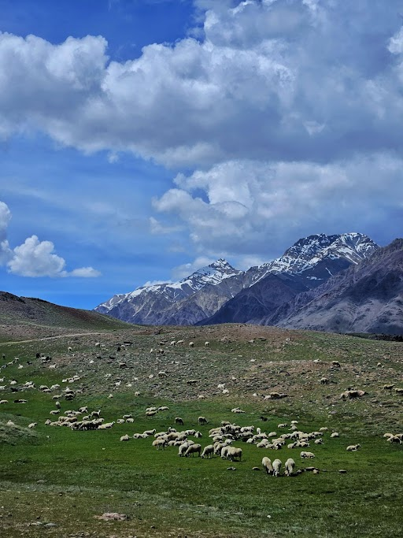
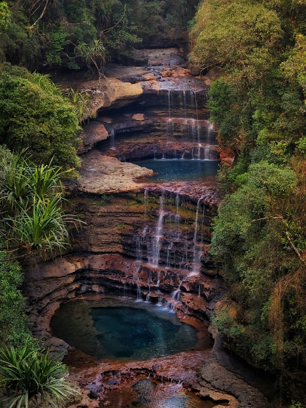

Terrestrial Observations
Apart from data analysis and modelling, I find myself drawn to landscapes - places where light behaves strangely, where the sky feels close, and a feeling of tranquility. Here are some of my recent travels.

Manali & Spiti
Mighty Himalayan ranges and zero light pollution reveal the Milky Way in detail. Cold nights, slow exposures, and the silence of high altitude.
"The sky here feels like a data cube — layer after layer, all the way back."
Read journal →

The Abode of Clouds
Deep gorges and perpetual mist. Light scatters through dense vapor in ways that remind me of optically thick disc surfaces — beautiful and disorienting in equal measure.
"Mist flows through the canyons like gas through a gap-opening planet's wake."
Read journal →

Nainital
Long exposures beside a highland lake at twilight. The water surface acts as a perfect flat mirror — a natural reflection nebula at low altitude.
"Still water at dusk: the closest thing to a flat-field calibration frame in nature."
Read journal →